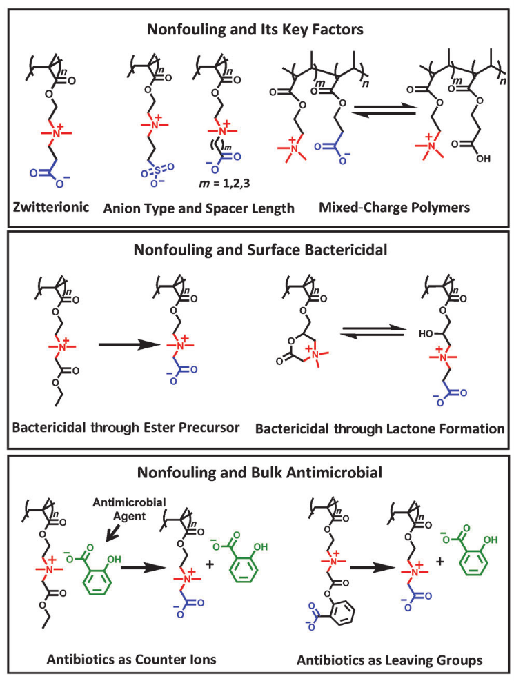
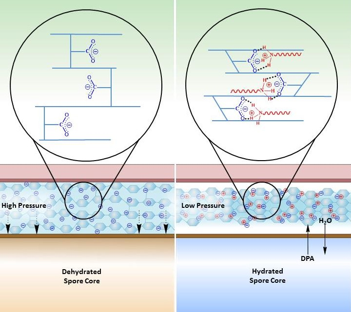

Renewable Energy
The prepondance of scientific evidence accumulated over the past few decades has pointed to the use of fossil fuels as one major cause for global climate change. Though the forward trajectory of ongoing climate change is less than certain, the potential envionmental consequences associated with it are simply too grave to ignore. Gradually phasing out the use of fossil fuels and substituting with carbon-neutral renewable energy is the environmentally responsible path for human society to move forward. Compared with other renewable energy forms, liquid biofuels are more compatible with current infrastructure and have a much higher energy density. My current work aims at deriving biofuels from waste plant biomass in stead of the traditional choice of glucose, if successfully implemented and commercially viable, this approach avoids competition with food production for the limited agricultural land.
Biomaterials

Biomaterials generally refer to materials designed to function in biological systems. Polyethylene glycol (PEG) has been the gold standard in this area of bioengineering research for decades. Despite the robustness and popularity of PEG, the general lack of structural diversity of PEG makes it difficult to tailor and fine-tune this polymer for specific biomedical scenarios. This limitation has motivated many researchers to search for possible alternatives, and zwitterionic polymers have emerged in recent years as a promising candidate. My Ph.D. works on zwitterionic materials demonstrated the scope of molecular designs feasible on this group of polymers without compromising their biocompatibility and nonfouling properties.
Antimicrobial Agents

Compared to actively growthing cells, bacterial endospores and biofilms can generally survive much harsher treatments from small molecule antimicrobial agents. This phenomenon has largely been attributed to their more dormant metabolic state. As side projects during my PhD study (and also out of my personal interest), I explored several new approaches aginst these two resilient life forms.